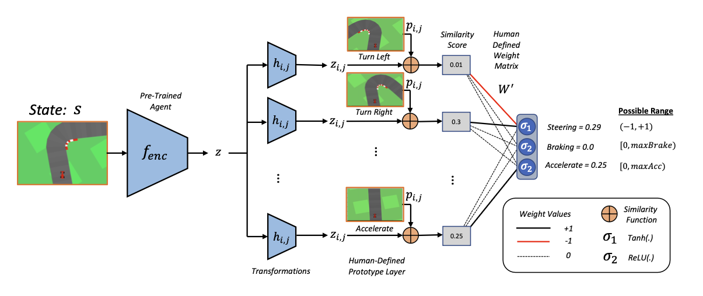

Home
I am an explainable AI reseracher. Previously, I did my Ph.D. at University College Dublin, Ireland. For my undergrad, I completed my Bachelor of Music degree (and Master of Arts in Musicology & Performance) at the University of Maynooth. Currently, I am at MIT primarily researching interpretable deep reinforcement learning for my postdoc.
My research vision is to design interpretable AI systems which reason in the same way humans do, so that we can clearly see what they are doing in a causally faithful way that everyone can understand (not just ML experts). This will help us successfully utilize their abilities in sensitive domains such as medicine, finance, and autonomous vechicles where people with various backgrounds need to interact with the systems.
Specifically, I believe in using exemplar/prototype theory, contrative explanation, and causal reasoning (either in the sense of the world or model) in this process. My strongest contributions to the field have been (1) the introduction of Semi-Factual explanation, and (2) designing the first inherently interpretable Deep RL system.
Above all however, I am a strong advocate for testing these systems on real humans to prove their utility.
Feel free to reach out if you would like to talk.
Towards Interpretable Deep Reinforcement Learning with Human-Friendly Prototypes
TL;DR: We build the first inherently interpretable, general, well performaning, deep reinforcement learning algorithm.
Abstract: Despite recent success of deep learning models in research settings, their application in sensitive domains remains limited because of their opaque decision-making processes. Taking to this challenge, people have proposed various eXplainable AI (XAI) techniques designed to calibrate trust and understandability of black-box models, with the vast majority of work focused on supervised learning. Here, we focus on making an "interpretable-by-design" deep reinforcement learning agent which is forced to use human-friendly prototypes in its decisions, thus making its reasoning process clear. Our proposed method, dubbed Prototype-Wrapper Network (PW-Net), wraps around any neural agent backbone, and results indicate that it does not worsen performance relative to black-box models. Most importantly, we found in a user study that PW-Nets supported better trust calibration and task performance relative to standard interpretability approaches and black-boxes.
Eoin M. Kenny, Mycal Tucker, Julie A. Shah
[ICLR 2023] * Spotlight Presentation (top 25% of accepted papers)